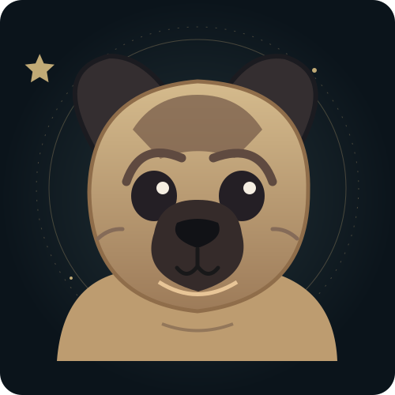

CỬA ẢI ⅠCHƯA HOÀN THÀNH
NHA TRANG · KHÁNH HÒA
Bến gió Nha Trang
Trở về miền biển anh yêu. Thả câu một chút, biết đâu có cá ngon cho bữa tối?
CHIẾN LỢI PHẨM Cá biển: 0/2
Biển đang yên, cá đang chờ...
HẮC HẢI KÝ SỰ THIÊN MÔN KHAI MỞ
Chúc mừng sinh nhật anh Công.
Trải nghiệm không tự bật âm thanh.
Nếu mỗi người có một giang hồ của riêng mình, thì đây là thế giới em muốn dành tặng anh — có biển, có núi, có những trò anh yêu, và một chút thương từ em.
Một nhân vật không giống ai
Có những người chọn một thế giới để sống. Còn anh thì dường như muốn tìm hiểu tất cả: từ phim Hà Nhân, tiên sơn kỳ ảo, võ lâm Cửu Long Tranh Bá, một nông trại pha RPG… đến HPC, Lustre, lịch sử, địa lý, toán học và những ý tưởng được vẽ ra rồi in thành hình.
Em không thể tạo nên toàn bộ vũ trụ ấy, nhưng em có thể dựng một góc nhỏ dành riêng cho anh.
— Một món quà được làm bằng sự tò mò và thương yêu.BẢN ĐỒ KỲ DUYÊN
Không cần vội. Giang hồ này đợi anh.
Mỗi vùng đất giữ một điều anh yêu. Chọn một địa điểm trên bản đồ để bước vào thử thách — tất cả đều mở sẵn.
Chạm vào một địa điểm để dịch chuyển
Chọn thử thách theo ý anh, không cần làm theo thứ tự.
Trở về miền biển anh yêu. Thả câu một chút, biết đâu có cá ngon cho bữa tối?
Biển đang yên, cá đang chờ...
Ở đây trồng đậu phộng cũng như làm nhiệm vụ RPG: chạm luống đất để gieo → tưới → thu hoạch.
Nhấn một luống đất để bắt đầu.
Hợp nhất ba tinh tú để kích hoạt siêu máy chủ sinh nhật. Bộ nhớ lưu trữ: vô hạn điều đáng nhớ.
Đang chờ kết nối các node.
Một thử thách nhỏ cho người có cả kho kiến thức về toán, lịch sử và địa lý.
GIỮA ĐỜI THƯỜNG VÀ TIÊN CẢNH
Một khung vẽ nhỏ dành cho người thích biến ý tưởng thành hình dạng.
Ý tưởng của anh không chỉ nằm trên giấy. Có những điều anh thật sự tạo được bằng đôi tay mình.
3D PRINTING • CREATE • REPEAT
NGÔI SAO MANG TÊN BOB
Trong giang hồ rộng lớn này, em dành riêng một góc thật ấm cho Bob — chú pug từng là một phần trong câu chuyện của anh.
Không cần điều gì quá lớn lao. Chỉ cần những kỷ niệm nhỏ cũng đủ làm một thế giới trở nên đặc biệt.
KHÔNG CẦN HOÀN THÀNH NHIỆM VỤ MỚI ĐƯỢC ĐỌC
Không phải bí kíp võ công, cũng chẳng phải một phần thưởng hiếm. Chỉ là vài lời của em, dành riêng cho anh.
Chúc tuổi mới của anh thật rực rỡ, theo cách anh thích nhất.